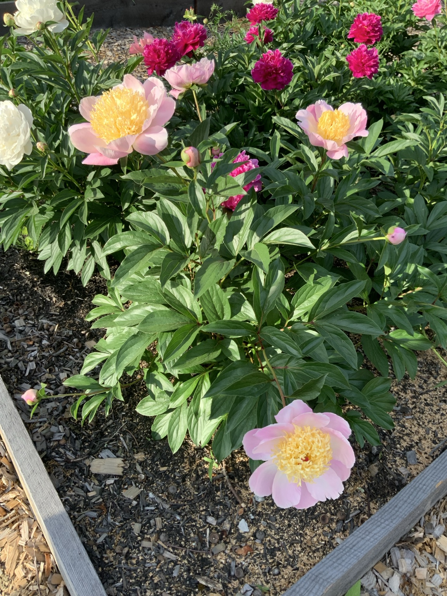
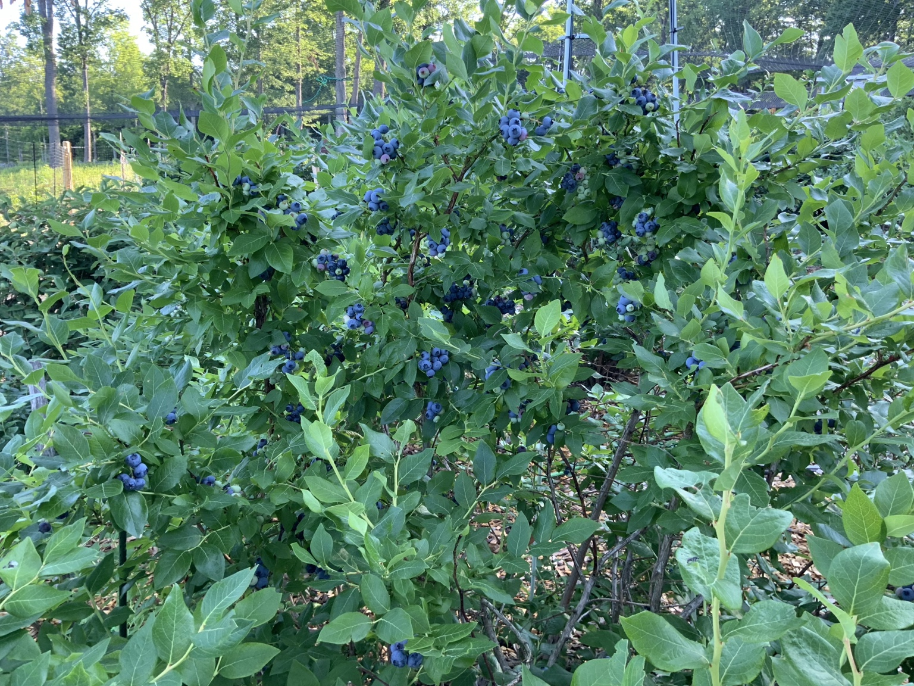

Today in Lou’s Garden
🔍 Search all plants
Seasonal Garden Dashboard
54searchable entries
13indoor plants
15vegetable guides
13trees & shrubs
This month’s tasks
Full calendar →Browse Lou’s garden
Large photo tiles now make every main section easy to find.

Garden Vegetables
Planting, indoor starting, harvest and crop photos.

Flowers
Peonies, dahlias, daylilies, lavender and more.

Trees & Shrubs
Individual pages with Lou’s landscape photos.

Fruit & Berries
Blueberries, grapes, honeyberries and cane fruit.
🪴
Indoor Plants
All 13 houseplants are now clearly visible.

Garden Areas
Pool garden, vegetable garden, shade garden and more.